前端经验总结
HKGTA前端项目
Created by Shuai Liang and Steven and Sherry
Topic
- 项目架构
- 前端构建
- 编码规范
- Sass
- 认证与权限
- 部署
技术选型
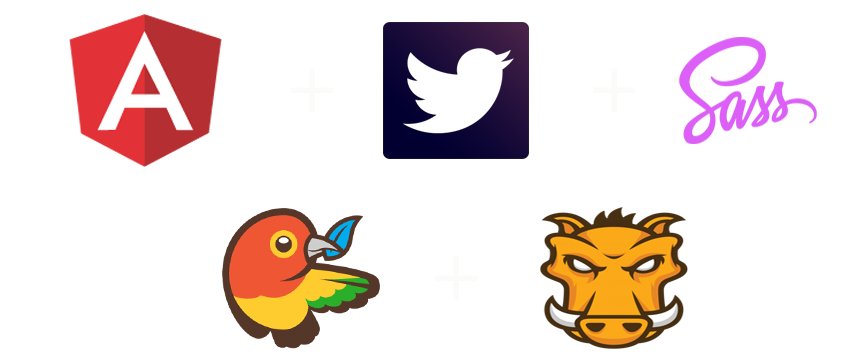- 双向数据绑定
- 依赖注入
- 模块化
- 组件化
- ...
- 丰富的Web组件
- 响应式布局
- 网格系统
- jQuery插件
- 工程化的CSS
- CSS预处理
- 支持变量
- 支持层级嵌套
- 支持宏(Mixin)
- 支持值计算
- Web依赖管理工具
- 自动安装依赖的组件
- 组件之间的依赖检测
- 版本兼容性自动检测

- JS文件合并
- JS代码自动压缩
- jsHint/jsLint检测
- Sass编译
- CSS代码合并压缩
- 监听文件修改
- 版本Hash
其实我们还可以做的更多
- Jasmine
- Karma
- Protractor or Nightwatch
前端构建
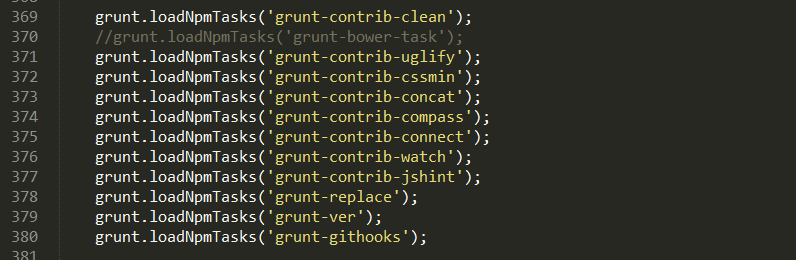
Gruntfile.js编写
类似于Ant中的Build.xml ，Grunt使用Gruntfile.js配置任务
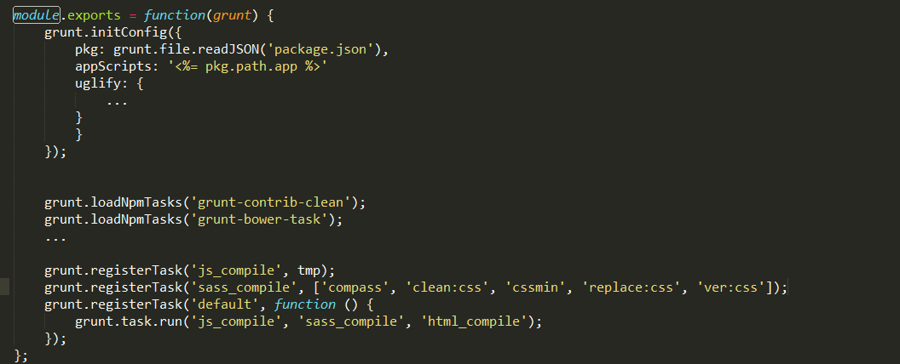
grunt-contrib-clean
执行文件清理任务
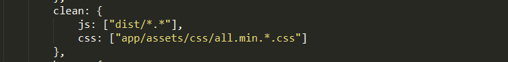
grunt-bower-task
执行bower install任务
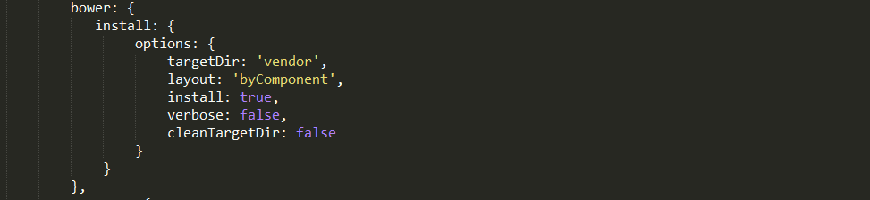
grunt-contrib-uglify
JS文件压缩插件
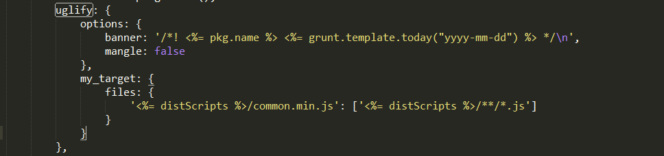
grunt-contrib-cssmin
CSS压缩插件
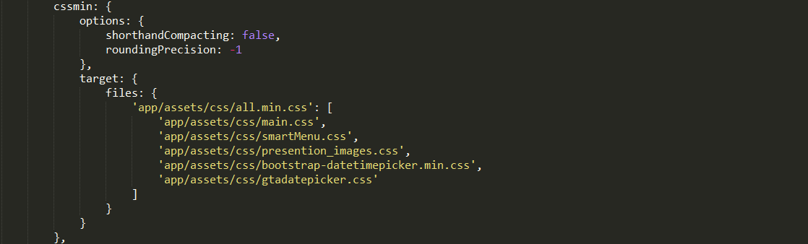
grunt-contrib-concat
文件合并
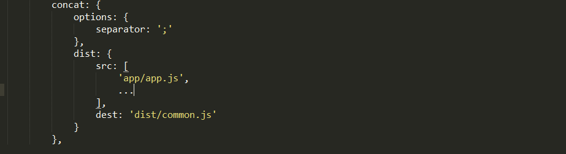
grunt-contrib-compass
编译Sass
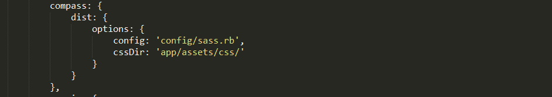
grunt-contrib-watch
监控文件修改，配合connect-livereload实现修改文件即可刷新浏览器
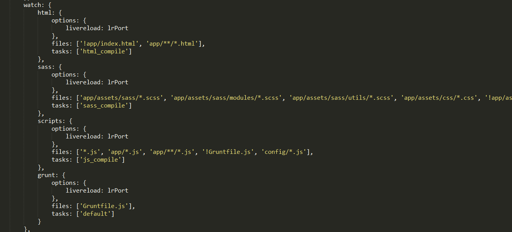
grunt-contrib-connect
监控文件修改，配合connect-livereload实现修改文件即可刷新浏览器
grunt-contrib-jshint
代码规范检测
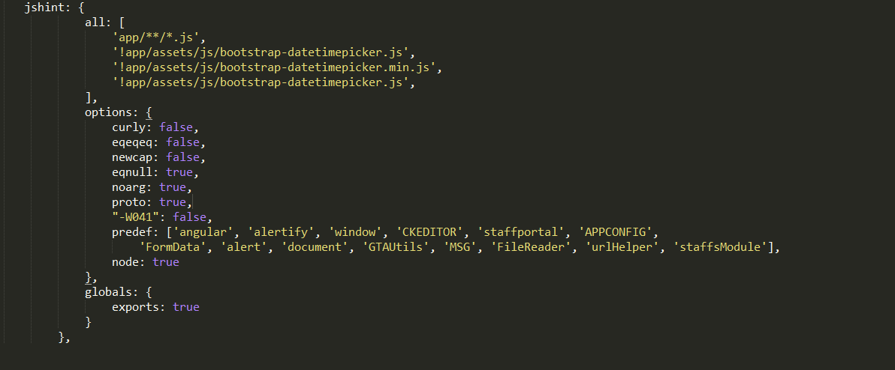
前端编码规范
Sass
一、 写Sass 前
1. 建议将大部分mockup整体review一遍。 这样可以对整个项目做一个简单了解。对一些模块以及功能也会有一定了解，虽然，前期一般只能看到一部分mockup，但是这也为后面 一些文件目录结构的划分有一定的帮助。
2. Sass 源文件目录结构划分以及创建;
为什么源文件要划分不同文件？ --- 最主要的原因就是：
可维护性
大型项目必然涉及多人、多团队共同配合开发，这时候就需要保证Sass 文件的可读性、可扩展性以及可维护性。
例如：
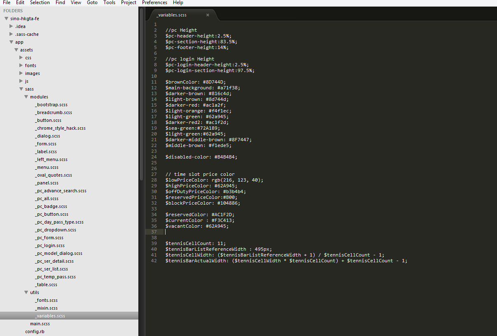
构建你的结构体系
CSS预处理器的特点之一是可以把你的代码分割成很多个文件，而且不会影响性能。这都要归功于Sass的@import 命令，只要在你的开发环境下，你调用不管多少文件，最终将编译出一个CSS样式文件。
多个文件中开发，最终合并输出一个文件。——@Bruce Lee
开始将你的CSS文件分割成多个文件和文件夹。正如我的一位导师说的“任何事物都有其正确的地方，每个地方都有其正确的事”。那么，这也是我喜欢做的事。
文件夹构建
以下转载由大漠根据Hugo Giraudel的《Architecture for a Sass Project》所译的译文，英文出处：http://www.sitepoint.com/architecture-sass-project
你在创建CSS的架构的时候也应该如此：你不只是把所有的Sass文件放在一个文件夹下，你会将他们分类。
下面的示例屏示的是我将如何组织我的Sass文件：
正如你所看到的，在根目录底下只有一个main.scss文件，其他.scss文件都根据不同的分类放在对应的文件夹中，只是这些.scss文件前面都有一个下划线(_)，用来告诉Sass，这些.scss文件只是局部，不通过@import 是不应该被编译出.css文件。事实上，它们是导入和合并文件的基本文件而以。
推荐范例：
sass files contents/ |– layout/ | |– _grid.scss # Grid system | |– _header.scss # Header | |– _footer.scss # Footer | |– _sidebar.scss # Sidebar | |– _forms.scss # Forms | ... # Etc… | |– pages/ | |– _home.scss # Home specific styles | |– _contact.scss # Contact specific styles | ... # Etc… | |– themes/ | |– _theme.scss # Default theme | |– _admin.scss # Admin theme | ... # Etc… | |– vendors/ | |– _bootstrap.scss # Bootstrap | |– _jquery-ui.scss # jQuery UI | ... # Etc…
推荐范例：
|– layout/ | |– _grid.scss # Grid system | |– _header.scss # Header | |– _footer.scss # Footer | |– _sidebar.scss # Sidebar | |– _forms.scss # Forms | ... # Etc… | |– pages/ | |– _home.scss # Home specific styles | |– _contact.scss # Contact specific styles | ... # Etc… | |– themes/ | |– _theme.scss # Default theme | |– _admin.scss # Admin theme | ... # Etc… | |– vendors/ | |– _bootstrap.scss # Bootstrap | |– _jquery-ui.scss # jQuery UI | ... # Etc… | | `– main.scss # primary Sass file
接下来，我们依次来看结构中的每一个文件目录。
Base
base/文件夹包含了一些有关于你的项目中一些模板相关。在这里，你可以看到reset样式(或者Normalize.css,或者其他)，也有一些关于文本排版方面的，当然根据不同的项目会有一些其他的文件。
_reset.scss或_normalize.scss_typography.scss
Helpers
helpers/文件夹（有的地方也称其为utils/）主要包含了项目中关于Sass的工具和帮助之类。在里面放置了我们需要使用的_function.scss，和_mixin.scss。在这里还包含了一个_variables.scss文件（有的地方也称其为_config.scss），这里包含项目中所有的全局变量（比如排版本上的，配色方案等等）。
_variables.scss_mixin.scss_function.scss_placeholders.scss(也有称为_helpers.scss)
Layout
layout/文件夹(也可命名为partials/)中放主要用于布局方面的文件，比如说"header"，“footer”等。他也会包括_grid.scss文件，用来创建网格系统。
_grid.scss_header.scss_footer.scss_sidebar.scss_forms.scss
导航文件（_navigation.scss）文件放在这里也有意义，既可以放components/文件夹中。也可放在layout/文件夹中，当然最后还是由你自己来决定。
Components
对于一些小组件，都放在了components/文件夹（通常也称为modules/），layout/是一个宏观的（定义全局的线框），components/是一个微观的。它里面放了一些特定的组件，比如说slider，loading，widget或者其他的小组件。通常components/目录下的都是一些小组件文件。
_media.scss_carousel.scss_thumbnails.scss
Page
如果你需要针对一些页面写特定的样式，我想将他们放在page/文件夹中是非常酷的，并且以页面的名称来命名。例如，你的首页需要制作一个特定的样式，那么你就可以在page/文件夹中创建一个名叫_home.scss文件。
_home.scss_contact.scss
根据你自己的布署，你可以根据自己的需求调用这些文件，避免与其他样式文件合并在一起。这真的主取决于你自己。
Themes
如果你像我一样要为一个大型的网站制作多个主题，那么有一个theme/文件夹是非常有意义的。你可以把主题相关的文件放在这个文件夹中。这绝对跟具体的项目有关，你只要觉得跟主题相关的，有必要引入。
_theme.scss_admin.scss
Vendors
最后一个但并非不重要，创建vendors/文件夹，主要用来包含来自外部的库和框架的CSS文件。比如Bootstrap,jQueryUI，FancyCarouselSliderjQueryPowered等等。把这些文件放在同一个文件夹中，你可以说，嘿，这些代码不是我的，不是我写的，跟我无关。
例如：
bootstrap.scssjquery-ui.scssselect2.scss
二、 写Sass 时
对照mockup，提取公共部分（如颜色、列表、按钮等等）设置成变量
有些mockup designer 会提供带标注，有的没有，或者有些标注遗漏，这时候，你可以选择问designer 要，或者 自己动手丰衣足食！
目前，网络上很多标注工具，如像素大厨，ps
个人习惯用ps： 如下图：
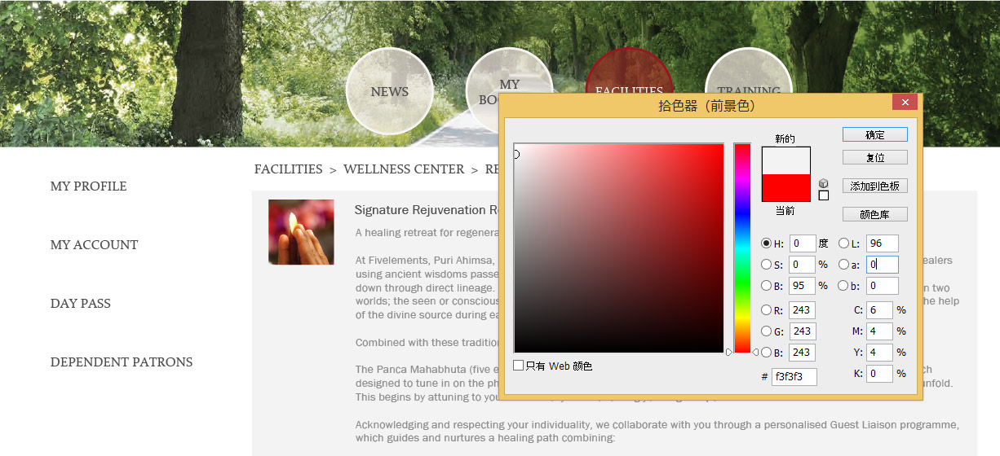
Sass 常用语法
1. 变量
编译前：
$white:#fff;$font12:12px;
.menu{
color: $white;
font-size: $font12;
}编译后：
.menu {color: white;
font-size: 12px;
}2. 嵌套
嵌套极大程度上降低了选择器名称和属性的重复书写。
选择器嵌套
属性嵌套
选择器嵌套
.header{
.logo{
display: block;
border: none;
}
ul li{
line-break: normal;
}
}
属性嵌套
h3{
font:{
size:26px;
weight:normal;
family:arial
}
}
3. 混合器mixin
sass中的混合器一般用来解决大段代码重复的问题。比如我们经常使用的单行文本溢出显示省略号，可以使用@mixin来定义一个简单的混合器：
编译前：
@mixin ellipsis {
width: 100%;
overflow: hidden;
white-space: nowrap;
text-overflow: ellipsis;
}
然后在需要用到的地方我们可以通过@include来使用这个混合器：
.text {
@include ellipsis;
}
编译后：
.text {
width: 100%;
overflow: hidden;
white-space: nowrap;
text-overflow: ellipsis;
}
带参数的混合器
混合器不仅可以实现代码的重复利用，还可以传递参数，根据需要生成不同的css。这在跨浏览器的css3兼容方面尤为好用。例如：
编译前：
@mixin radius($value) {
-moz-border-radius: $value;
-webkit-border-radius: $value;
border-radius: $value;
}
使用时，我们只需传入相应的参数值即可。
.test {
@include radius(3px);
}
编译后：
.test {
-moz-border-radius: 3px;
-webkit-border-radius: 3px;
border-radius: 3px;
}
另外我们还可以给参数提供默认值，如：
编译前：
@mixin link-colors($normal: #333, $hover: $normal, $visited: $normal) {
color: $normal;
&:hover {
color: $hover;
}
&:visited {
color: $visited;
}
}
调用时，可以传参，也可以不传：
.text {
@include link-colors;
}
.error {
@include link-colors(red);
}
a {
@include link-colors(blue, green, yellow);
}
编译后：
// 鉴于篇幅问题，已将生成的代码改成单行
.text { color: #333;}
.text:hover { color: #333;}
.text:visited { color: #333;}
.error { color: red;}
.error:hover { color: red;}
.error:visited { color: red;}
a { color: blue;}
a:hover { color: green;}
a:visited {color: yellow;}
4. 继承
SASS通过@extend实现继承
这种继承虽然方便，但是也有一定的弊端。比如我们仅仅想继承.pclass类中的样式，而实际并不需要.pclass的这个类。换句话说就是我们的html中并没有class="pclass"这样的代码，这样的话生成的css中的.pclass其实就是多余的。 对于这种情况，sass3.2.0及以后的版本也给我们提供了解决方案：占位选择器%。
5. 占位选择器%
占位选择器的优势在于：声明之后，如果不调用，则不会产生类似.pclass的多余css代码。占位选择器通过%标识来定义，也是通过@extend来调用。
6. sass条件判断
sass中的@if语句和js中的if很相似。可以单独使用，也可以配合@else使用。
三、 写完Sass 后
建议自己 对自己的代码做一个code review以及一些修整，这样，sass 代码看起来会更干净、整洁！
有些事情花了我们很多时间,
但应该可以避免的,例如. . .
但应该可以避免的,例如. . .
1.各种样式的频繁修改，如字体、对齐方式、颜色、尺寸等

2.项目中后期样式的调整。
由于css写得耦合度太高，即使是微小的样式调整，也要花费大量时间，而且经常改好一个地方，另一个地方又错了。
例如，我要让某页面的按钮从左对齐改成右对齐。
这里用了很多后代选择器来控制样式。于是我找到这个页面顶级对象的id：facility-management。
然后到scss文件中搜了一下. . .
我当时的心理活动：
好吧，我承认这些大部分是我自己写的。
3.项目初期
- 对angular不太了解
- 编码习惯差异
- 采用分组方式进行开发
导致跨组维护代码比较困难
4.项目前期，前后端互相推诿
例如，有个功能要计算1+1的结果并显示在页面上. . .
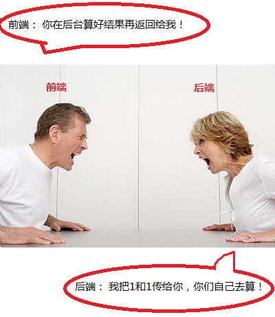上述问题, 可以这么解决
1.制定UI标准和组件库
前面已经提过，这里仅粗略再提一下
已包含的组件
- 日历
- 按钮
- 下拉框
- 等等……
例如我们的按钮标准：
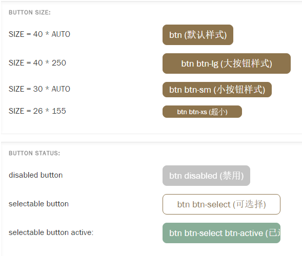2.提取公用功能做成angular指令
已有的指令：
- 分页
- 弹窗
- 等等……
3.制定CSS编写规范
编写模块化CSS，可参考OOCSS.
没有实行，现在的css已经积重难返，每次改样式都很痛苦。
OOCSS中的部分建议
- 避免后代选择器(如不要使用类似于.sidebar h3)
- 避免使用id选择器
- 避免在你的样式表中给类名附属一个元素名(如不要这样做div.header or h1.title)
- 除非一些很少的情况，避免使用!important
4.制定JS编写规范
前面已经提过，在此不在敖述
5.代码审查
可以管控规范是否有效执行。
项目中前期靠前端leader执行,后来由于进度压力而被忽略。
若能坚持执行,项目质量会有所提高,改bug时间会有所减少。
6.明确前后端职责，订立规则
在项目前期发挥作用
没有绝对正确的规则,及早确定职责,是为了减少推诿发生.
例如样式、表现内容的格式化交给前端，获取数据、复杂业务逻辑交给后端
项目进行过程中不断改进规则
团队磨合后，可丢弃规则
7.业务需求分析
在编码前,建议要顶住压力先把业务需求理清,避免后期的反复修改